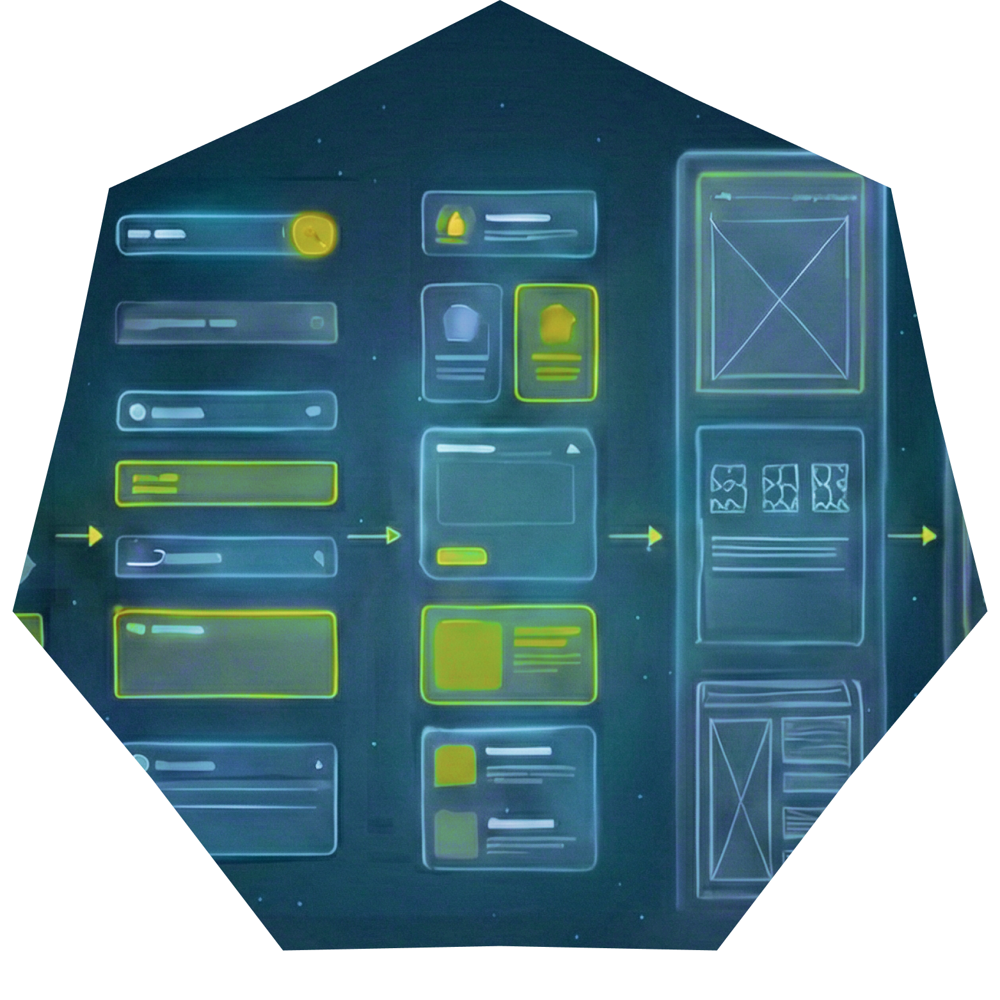
WealthCounsel had grown through acquisitions, resulting in multiple products with inconsistent interfaces and workflows. Attorneys using different tools faced a disjointed user experience with steep learning curves and low efficiency.WealthCounsel había crecido a través de adquisiciones, lo que resultó en múltiples productos con interfaces y flujos de trabajo inconsistentes. Los abogados que usaban diferentes herramientas enfrentaban una experiencia de usuario desarticulada con curvas de aprendizaje pronunciadas y baja eficiencia.
The company needed a unified approach — both in design and research — to streamline workflows, reduce support needs, and better serve legal professionals at various career stages.La empresa necesitaba un enfoque unificado — tanto en diseño como en investigación — para optimizar los flujos de trabajo, reducir las necesidades de soporte y servir mejor a los profesionales legales en varias etapas de su carrera.
WealthCounsel provides software that helps estate planning attorneys draft complex legal documents efficiently. Their users range from solo practitioners to large firms, each with different needs and technical comfort levels.WealthCounsel proporciona software que ayuda a los abogados de planificación patrimonial a redactar documentos legales complejos de manera eficiente. Sus usuarios van desde profesionales independientes hasta grandes bufetes, cada uno con diferentes necesidades y niveles de comodidad técnica.
The challenge was understanding diverse user workflows while establishing consistent design patterns that could scale across multiple product lines and business units.El desafío era comprender diversos flujos de trabajo de los usuarios mientras se establecían patrones de diseño consistentes que pudieran escalar a través de múltiples líneas de productos y unidades de negocio.
To better understand our users, I initiated and led a benchmark product research study. I conducted 22 in-depth interviews with attorneys across different practice sizes and experience levels.Para comprender mejor a nuestros usuarios, inicié y lideré un estudio de investigación comparativa de productos. Realicé 22 entrevistas en profundidad con abogados de diferentes tamaños de práctica y niveles de experiencia.
This research revealed meaningful friction points — particularly around onboarding, drafting efficiency, and content discovery — which informed our broader UX strategy and design system structure.Esta investigación reveló puntos de fricción significativos — particularmente en torno a la incorporación, la eficiencia de redacción y el descubrimiento de contenido — que informaron nuestra estrategia UX más amplia y la estructura del sistema de diseño.
In parallel with the research, I led the creation of WealthCounsel's first comprehensive design system — aligning three cross-functional product teams around a unified UI language and interaction model.En paralelo con la investigación, lideré la creación del primer sistema de diseño integral de WealthCounsel — alineando tres equipos de producto multifuncionales en torno a un lenguaje UI unificado y modelo de interacción.
This involved two key phases: UI Audit & Analysis to catalog existing patterns, and Design & Rollout to build a centralized library with documentation.Esto involucró dos fases clave: auditoría y análisis UI para catalogar patrones existentes, y diseño y despliegue para construir una biblioteca centralizada con documentación.
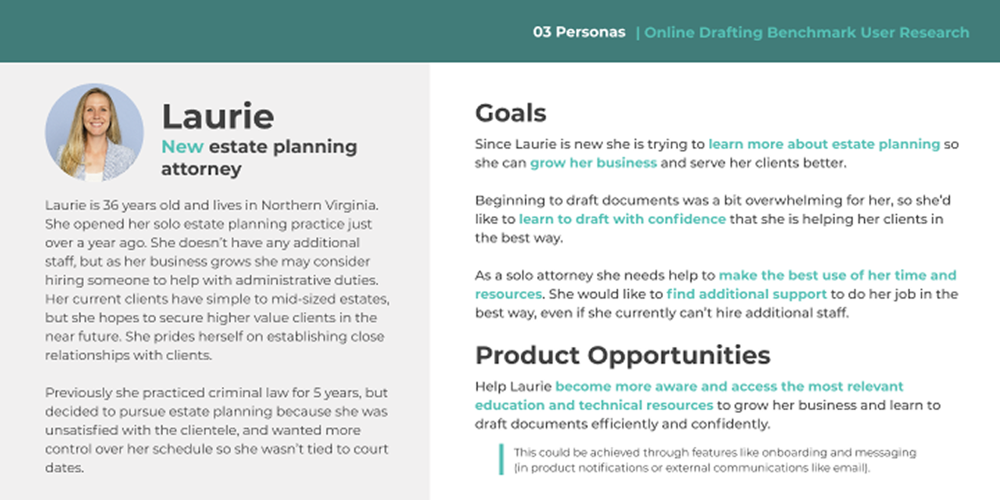
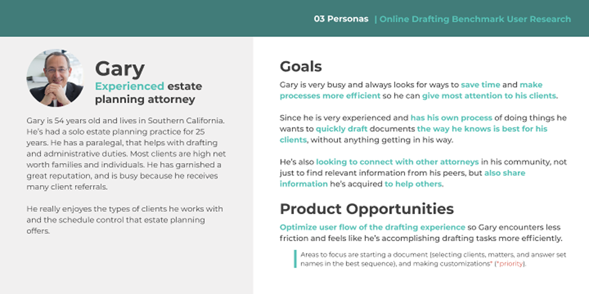
User personas developed from research interviews showing different attorney profiles and needsPersonas de usuario desarrolladas a partir de entrevistas de investigación mostrando diferentes perfiles y necesidades de abogados
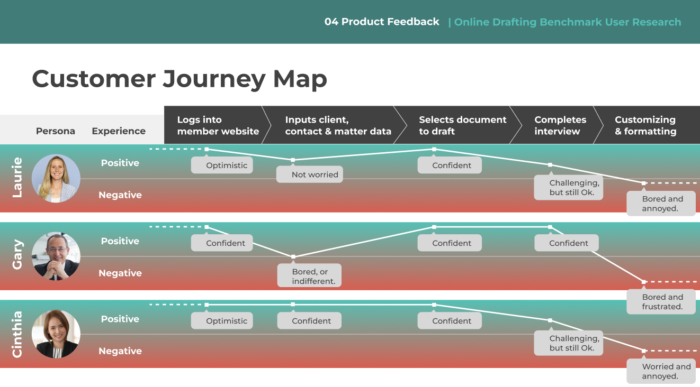
User journey map illustrating key touchpoints and pain points throughout the user experienceMapa del recorrido del usuario que ilustra los puntos de contacto clave y puntos de dolor a lo largo de la experiencia del usuario
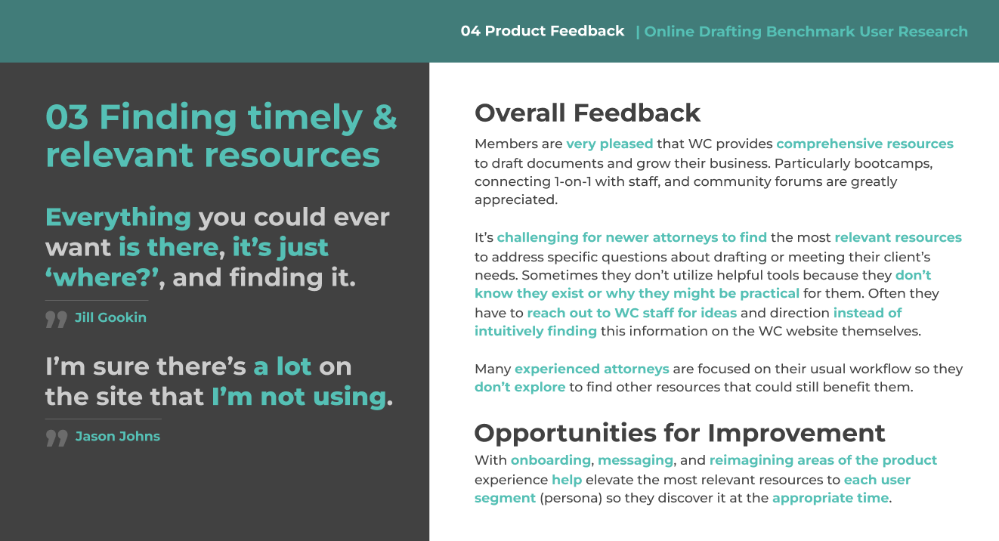
Research synthesis showing key themes and insights from user interviewsSíntesis de investigación mostrando temas clave e insights de las entrevistas de usuarios
I created WealthCounsel's first comprehensive design system, providing a centralized source of truth for UI components, typography, color, and interaction patterns. This system aligned three product teams and streamlined the design-to-development handoff process.Creé el primer sistema de diseño integral de WealthCounsel, proporcionando una fuente centralizada de verdad para componentes UI, tipografía, color y patrones de interacción. Este sistema alineó a tres equipos de producto y optimizó el proceso de transferencia de diseño a desarrollo.
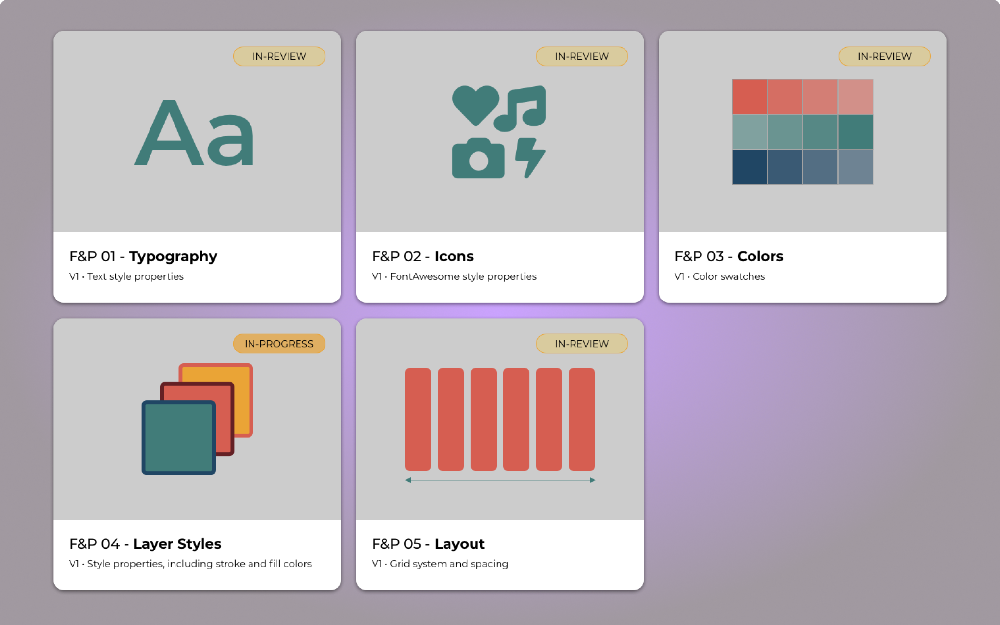
Core design principles and foundational elements that guide the systemPrincipios de diseño fundamentales y elementos fundacionales que guían el sistema
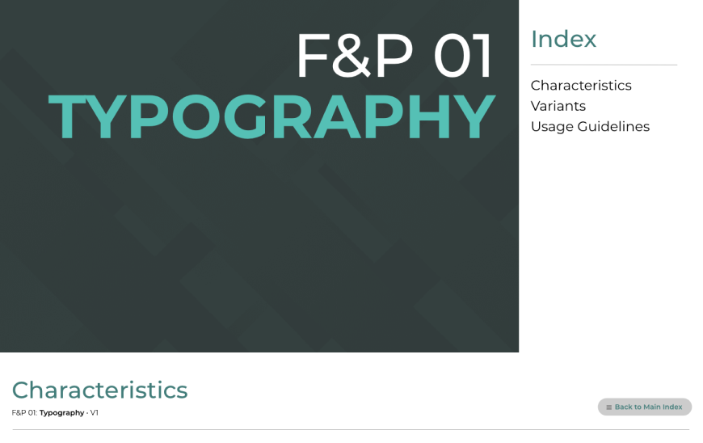
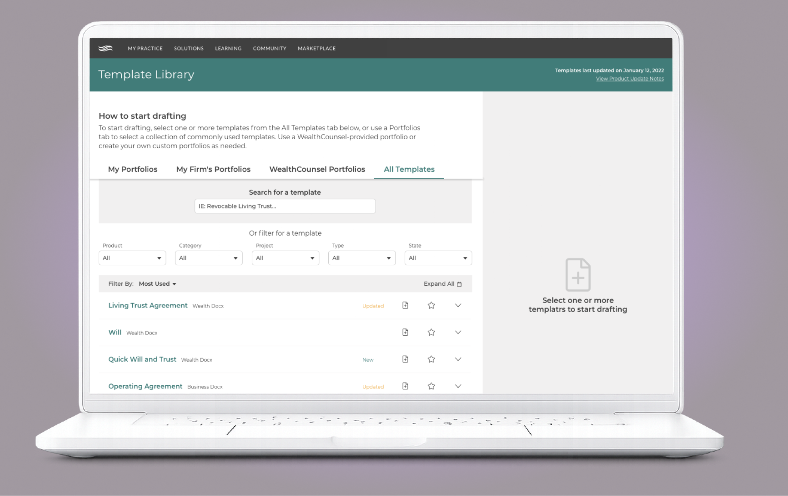
Comprehensive typography guidelines with variants and usage examplesLineamientos tipográficos integrales con variantes y ejemplos de uso
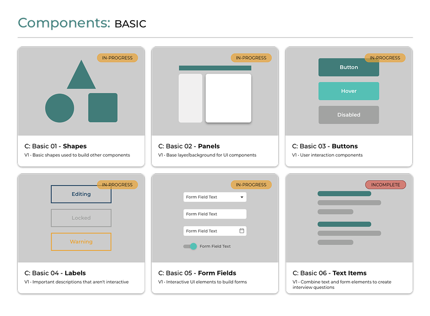
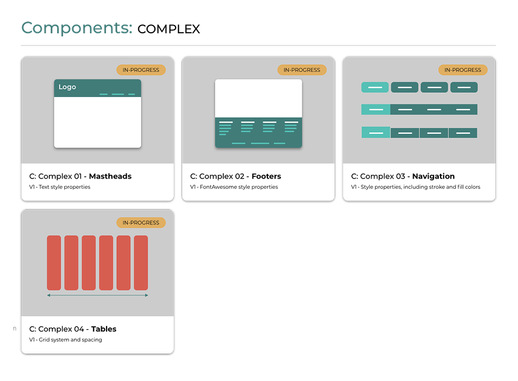
Reusable component library ranging from basic elements to complex patternsBiblioteca de componentes reutilizables desde elementos básicos hasta patrones complejos
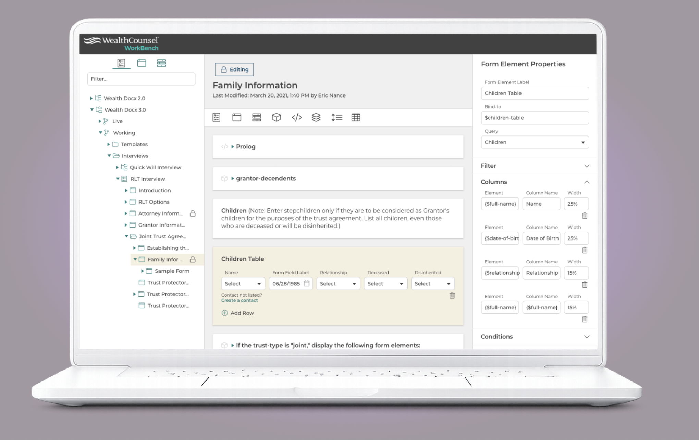
More usage examplesMás ejemplos de uso
Conducted in-depth research with diverse attorney profiles to inform roadmap prioritiesInvestigación en profundidad con diversos perfiles de abogados que informó prioridades de la hoja de ruta
Created centralized component library aligning 3 product teams reduced design debt and accelerated cross-team collaborationBiblioteca centralizada de componentes alineó 3 equipos, reduciendo la deuda de diseño y acelerando la colaboración
Gained leadership support for ongoing user research and iterative design improvements creating a holistic foundation for UX maturityGanamos apoyo para iniciativas continuas de investigación y mejoras de diseño — combinación que creó una base holística para la madurez UX